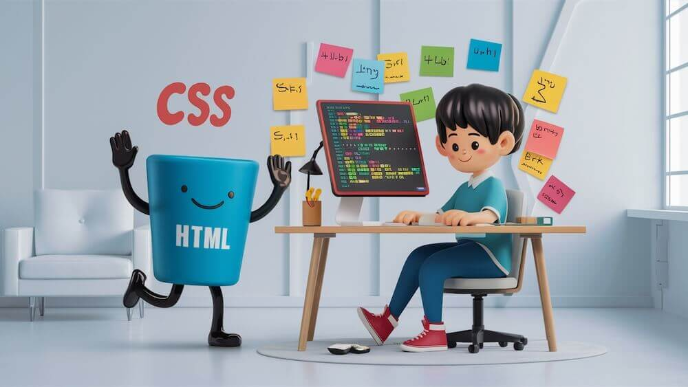

미니 프로젝트(html,css)

애플 아이폰 사이트
1. 마음에 드는 웹 사이트 찾고 의견 및 분석
- 아이폰 최신 기종의 이미지와 스펙을 그리드 배치함.
- 아이폰 고유의 디자인을 잘 표현해내는 사이트로 보임.
- 박스 레이아웃 및 텍스트 정렬이 잘 되어있음
- 애플 사이트는 레이아웃의 기반으로 Flexbox와 Grid를 사용한다.
네비게이션 바처럼 요소를 가로로 나란히 정렬할 때는 Flexbox를,
제품 카드처럼 격자 형태로 배치할 때는 Grid를 활용한다.
2. HTML, CSS 정리 내용



HTML
- 태그 분류 (문서 구조, 텍스트, 링크, 미디어, 목록 등)
- class와 id 구분 (명확성, 유지보수 용이)
- 음성 및 영상 등 멀티미디어 삽입하기
CSS
- 기본 문법 구조: 선택자, 선언 블록, 속성
- 별도의 .css 파일 생성 후 html에서 link 태그로 연결하기
- 박스 모델 및 위치 제어
- Flexbox(flex-direction, justify-content, align-items)
- Grid 레이아웃 (grid-template-columns, grid-template-rows)
- 가상 클래스 hover: 마우스가 요소 위에 위치할 때 적용됨
- 자동 애니메이션 (@keyframes)
- 3D 카드 뒤집기
- 반응형 media
- CSS 변수
- 그림자, 효과
- 가상 요소
- CSS 리셋
3. HTML, CSS 퀴즈 5개
1. 다른 웹페이지나 사이트로 이동할 수 있는 "하이퍼링크"를 만들 때 사용하는 태그는 무엇인가요?
정답: a 태그
2. 웹페이지에 사진이나 일러스트 같은 "이미지"를 삽입할 때 사용하는 태그는 무엇인가요?
정답: img 태그
3. 텍스트를 작성하다가 다음 줄로 강제로 "줄바꿈(개행)"을 하고 싶을 때 사용하는 태그는 무엇인가요?
정답: br 태그
4. 웹페이지 안의 텍스트나 제목의 "글자 크기"를 키우거나 줄이고 싶을 때 사용하는 CSS 속성은 무엇인가요?
정답: font-size
5. 웹사이트의 바탕 화면이나 특정 상자(div)의 "배경 색상"을 지정할 때 사용하는 CSS 속성은 무엇인가요?
정답: background-color